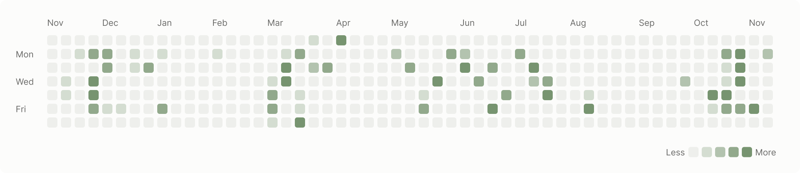

Designers in the codebase: UI bug to merged PR
20%-40% of my time goes into making changes directly in production code. Layout that breaks when panels sit next to each other. Icons, labels, and status colors that don't match from one screen to the next. Copy and defaults that don't say what they mean.

This post follows one of those fixes from start to finish. A few bugs kept coming from a banner section in the app. The fix was to clean up the section and add a way to collapse or dismiss it. It's a small change, and that's why it's a good one to walk through.
I pick up front-end PRs that need design polish, plus design bugs and user requests. I write the tickets into our regular backlog, and each week I sit down with my engineers to set goals and agree on which ones I'll take.
The banner was a simple front-end design change, so I took it.
I open Claude and pull in the Linear ticket. I check out a branch, inspect the banner in the browser, and point Claude at that part of the code. Then I write something like this:
Switch to branch <ticket-id> and work on <Linear ticket link>.
Context: clean up the banner section and add the ability to
collapse or dismiss it.That's the whole prompt. The ticket already holds the context, so I don't repeat it. The line I do add is the outcome I want, in one sentence.
A few things I'd otherwise type every time live in a rule set instead.
Branches for Linear tickets use just the ticket ID, like abc-123. Claude never writes en or em dashes in replies, commits, PRs, or copy, and it matches the existing tone. And every PR gets a real description from our template:
## Loom
## Short Description
## Before and After
| Before | After |
## Test Plan
## Checklist for PR AuthorsThe Before and After table matters most to me. One row per changed screen, state, or behavior means a reviewer can see what changed without pulling the branch.
Claude makes the change and I make sure the tests pass. Then I open a draft PR and look at a few things before anyone reviews it.
The first is the line count. A banner cleanup shouldn't be a big diff, and when it is, something extra slipped in. Usually that's custom code that doesn't need to exist. So I go back to our design system and component library and confirm Claude used the right variation of an existing component instead of building a new one.
Then I test the change myself against my asset source links and make before and after assets that an engineer can scan quickly. Only then does it go to ready for review, and it merges once it's been reviewed.
The code is only part of it. I also use Claude to question the change before and while I make it.
I ask "what touches this feature?" to see which pages and experiences are affected. For something like a dismissible banner, I ask for the error, empty, and loading states and check that the requirements cover them. I ask "what else breaks if we do X?" to find dependencies I wouldn't see from the design file.
A few checks go beyond a single ticket. I pull out key product terms and translation keys so the language stays the same across the app. I have it point out ARIA patterns and color usage and suggest fixes in the context of the code. And I check whether a design follows the patterns we already use. When I want to explore an idea before committing to it, I prototype it in code to try out copy and interactions.
My first PRs were copy changes, ten lines at most. They taught me how my engineers work and what review and merge actually feel like. After doing a bunch of those, I had the confidence to take on more complicated front-end and information architecture changes.
If you're a designer about to open your first PR, start there. The PR makes an idea real earlier. It doesn't replace design judgment or working with your team.